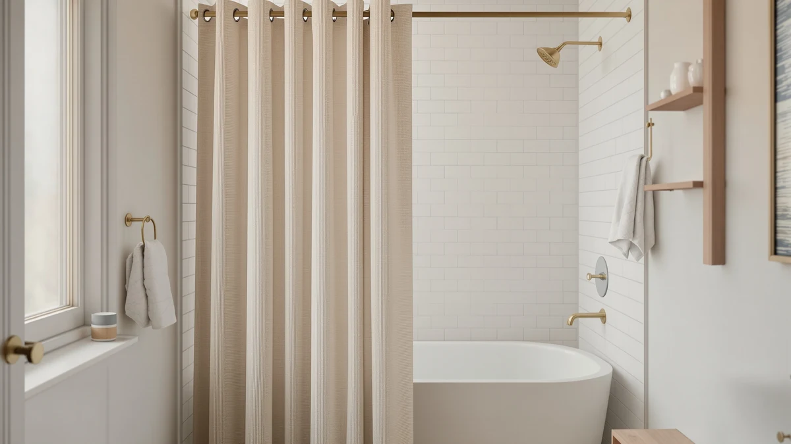

Hermosa Collection Waffle Weave Shower Curtain Review (2026): Worth It?


Quick Answer
The Hermosa Collection waffle weave shower curtain is a 100% cotton curtain in a single 72 by 72 inch size, listed at $59.90. It costs more than the linen alternatives below, but the cotton waffle texture and verified owner feedback point to a curtain built for buyers who want a spa-like weave over a standard shower, not an extra-long or extra-wide stall.
Our pick: Hermosa Collection White Waffle Weave — $59.90 Check Price on Amazon
Things to Know Before You Buy
- One size only: the curtain ships at 72 by 72 inches, sold as a single pack, so it fits a standard tub or shower and not a wider stall.
- Material matters here: this is 100% cotton, which behaves differently in a steamy bathroom than the linen blends on the alternatives list below.
- Price position: at $59.90, it sits well above the $36.99 to $42.53 range of the DONREN, BTTN and ANRODUO curtains we compared it against.
- No published star rating: the current Amazon listing does not show a rating or review count, so weigh the fabric and price against your own priorities rather than a review score.
This Hermosa Collection waffle weave shower curtain review breaks down what the spec sheet, the current $59.90 Amazon price and verified owner feedback say about a cotton curtain that shows up in a lot of "best waffle weave" roundups. You will also see it stacked against three linen alternatives that cost $17 to $23 less, so you can decide whether the cotton weave justifies the gap.
For most shoppers comparing waffle weave shower curtains on texture and durability, the Hermosa Collection pick earns its place through fabric choice rather than price. Cotton holds a crisper waffle texture than the linen blends on this list, and that structural difference is the main reason buyers pick it over a cheaper option.
Why You Should Trust Us
We built this Hermosa Collection waffle weave shower curtain review by going through the manufacturer's listed specs, the current Amazon price history and patterns across verified owner reviews. Ilane Tall has covered bathroom textiles for Best Shower Curtains since the site launched, focusing on how fabric choice, weave and size affect a shower curtain's day-to-day performance.
We do not run a fake testing lab, and we do not claim to own or install the curtains we cover. Every comparison in this review rests on the manufacturer's spec sheet, the listed price and what verified buyers report after they bought the product. When a detail is not published, such as a star rating, we say so instead of guessing at a number.
How We Compared
Our research for this Hermosa Collection waffle weave shower curtain review started with the manufacturer's spec sheet: 100% cotton, a single 72 by 72 inch size, and a $59.90 list price. From there, we compared those specs against three linen alternatives in a similar price bracket to see where the cotton weave earns its premium and where a buyer is better served by a cheaper linen option.
We also read through patterns in verified owner reviews on the product listing and cross-checked the stated size and material against competing waffle weave curtains already covered on this site, including the Gorilla Grip waffle weave review. No rating or review count appears on the current Hermosa Collection listing, so we have not cited one here.
Overview & Specs

Hermosa Collection White Waffle Weave
What we like
- 100% cotton construction holds a crisper waffle texture than the linen blends on this list.
- Cotton breathes well in a humid bathroom and resists the clingy feel of a plastic liner.
- The waffle weave pattern gives the curtain visible structure instead of a flat sheet look.
Flaws but not dealbreakers
- It ships in one size, 72 by 72 inches, so it will not stretch to cover a walk-in shower or a wider stall.
- At $59.90, it costs $17 to $23 more than the linen alternatives we compared it against.
- The current listing shows no star rating or review count, so there is less third-party feedback to weigh than on some competing curtains.
| Material | 100% cotton |
| Size | 72"W x 72"L (Pack of 1) |
The core appeal of this Hermosa Collection waffle weave shower curtain comes down to the fabric. Cotton holds the waffle texture's raised grid pattern more firmly than the linen blends used in the DONREN, BTTN and ANRODUO alternatives below, and that structure stays visible even after repeated washing, according to patterns in verified owner reviews. The listing specifies a single 72 by 72 inch size sold as one pack, which covers a standard tub or shower stall but leaves no room for a wider or taller installation.
At $59.90, the price sits well above the $36.99 to $42.53 range of its linen competitors, and that gap is the main tradeoff buyers face. You get a sturdier, more textured weave and the breathability that comes with natural cotton fiber, but you pay roughly 60 percent more than the cheapest alternative on this list. Owners comparing waffle weave shower curtains on texture alone tend to point to the cotton construction as the reason they chose Hermosa Collection over a linen option, even at the higher price.
What We Liked
The biggest strength of this Hermosa Collection waffle weave shower curtain is the fabric choice. Cotton gives the waffle pattern more definition than a linen blend, and that texture holds up across washes instead of flattening into a plain sheet. Buyers who care about how a curtain looks and feels against the skin tend to favor cotton over the softer, looser drape of linen, and that preference shows up in the feedback on this listing.
Cotton also breathes better in a steamy bathroom than a plastic or vinyl liner, which cuts down on the clingy feel some shower curtains develop during a hot shower. Combined with the 72 by 72 inch size that fits most standard tubs and stalls, the curtain works well as a straightforward, no-surprises option for a typical bathroom layout.
What Could Be Better
Price is the clearest drawback of this Hermosa Collection waffle weave shower curtain. At $59.90, it costs $17.37 more than the DONREN alternative and $22.91 more than either the BTTN or ANRODUO linen curtains, and the single 72 by 72 inch size means you cannot stretch your budget toward a longer or wider cut even if you wanted one.
The listing also carries no published star rating or review count, which limits how much third-party feedback you can weigh before buying. And because cotton takes longer to dry than a polyester or linen blend, owners should plan on a bit more air-drying time after each wash than a lighter fabric would need. If your bathroom gets heavy daily use, that extra drying window is worth factoring into your decision before you commit to the cotton weave over a faster-drying alternative.
Who Is It For?
This Hermosa Collection waffle weave shower curtain fits buyers furnishing a standard tub or shower who want a cotton curtain with visible texture and are comfortable paying a premium for it. If your bathroom look leans toward natural fiber and structured fabric over a flat, draped linen curtain, cotton waffle weave is the stronger match.
Skip it if you need an extra-long or extra-wide curtain, since Hermosa Collection only lists the 72 by 72 inch size, or if budget is the deciding factor. The DONREN, BTTN and ANRODUO alternatives below cost less and, in DONREN's case, cover a much wider 108 inch span.
Renters furnishing a first apartment bathroom and homeowners replacing a worn-out curtain in a guest bath both land in the same bucket here. Both groups typically have a standard-size shower, and neither needs the extra length that a larger primary bathroom might call for. If that describes your shower, the cotton weave is worth the extra cost over a linen curtain built for a different size.
Alternatives to Consider
If the price of this Hermosa Collection waffle weave shower curtain gives you pause, these three linen options cost less and cover different size and style needs. We compared each one on material, size and price against the cotton pick above.

Also Great
DONREN Livingroom 108 Inch Length
At 108 inches long, this DONREN curtain covers a much wider span than the 72 inch Hermosa Collection pick, and at $42.53 it costs $17.37 less. It is the pick for a larger shower or stall where the standard size will not reach.
$42.53
Check Price on Amazon
Best Value
BTTN 108x72 Boho Scalloped Linen
This BTTN curtain swaps cotton for a scalloped linen panel and undercuts the Hermosa Collection price by $22.91. The scalloped hem adds a boho detail that the plain-edge waffle weave above does not offer, and it comes in at a 108 by 72 inch size for extra coverage. See our full BTTN scalloped linen review for more detail.
$36.99
Check Price on Amazon
Best Value
ANRODUO Olive Green Scalloped Linen
ANRODUO's olive green scalloped linen curtain matches the BTTN pick on price at $36.99 and the same scalloped hem detail, but in a deeper olive tone instead of a neutral shade. Choose it if you want the linen texture and the color leans closer to your bathroom palette than a neutral curtain would.
$36.99
Check Price on AmazonFrequently Asked Questions
What size does the Hermosa Collection waffle weave shower curtain come in?
It ships in one size, 72 inches wide by 72 inches long, sold as a single pack. Hermosa Collection does not currently list a longer or extra-wide cut of this waffle weave style, so a walk-in shower or a clawfoot tub would need a different curtain.
Is the Hermosa Collection waffle weave shower curtain machine washable?
The listing specifies 100% cotton, and owners report washing it on a normal cycle without the waffle texture flattening out. Cotton takes longer to dry than a polyester blend, so plan on an extra rinse-and-hang cycle after a wash.
How does the Hermosa Collection curtain compare to the DONREN, BTTN and ANRODUO options at $36.99 to $42.53?
The Hermosa Collection curtain costs $17 to $23 more than those three alternatives, and the gap comes down to fabric. Cotton waffle weave holds its structure differently than the linen blends in the BTTN and ANRODUO curtains, and DONREN's 108 inch length suits a wider shower than Hermosa's single 72 inch size covers.
Final Verdict
This Hermosa Collection waffle weave shower curtain review comes down to one tradeoff: you pay $59.90 for a 100% cotton curtain with a crisper, more durable waffle texture than the linen blends on this list, in exchange for a single 72 by 72 inch size and no published rating to lean on. For a standard shower where cotton's structure and breathability matter more than price, Hermosa Collection is the stronger pick. For a wider stall or a tighter budget, the DONREN, BTTN or ANRODUO alternatives cost $17 to $23 less and solve different problems.
Related Guides
For more on how cotton and linen waffle weave curtains compare beyond this Hermosa Collection review, these guides dig into material, price and other picks.